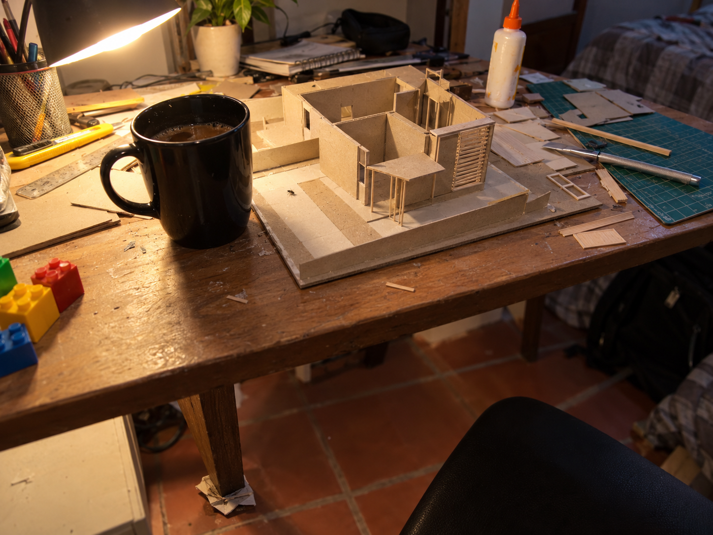

Elegís como Mariana. La conversación es ficticia.
UNA HISTORIA QUE SE JUEGA LEYENDO
La noche de Mariana
Son las siete de la noche. Daniel sigue con la maqueta. Vos sos Mariana, su mejor amiga, y llevás un rato intentando saber cómo está.
Elegí qué escribir. Prestá atención a lo que te manda. A veces una foto cuenta más que un mensaje.
Esta experiencia imagina una versión alternativa de la noche de La mosca. Tus decisiones solo afectan esta ficción.
DANIEL TE MANDÓ UNA FOTO

Mirá el escritorio. ¿Qué te llama la atención?
Podés revisar los objetos antes de volver al chat.
Imagen dramatizada para esta ficción.